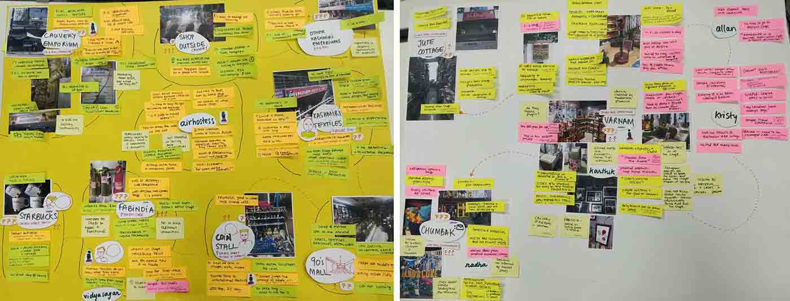

Weather Card
An attempt to create generative postcard designs using weather around us.
Duration: 1 Week(Individual) Tools used: Adobe XD, HTML/CSS,P5js, Rita.jsAn attempt to create generative postcard designs using weather around us.
Duration: 1 Week(Individual) Tools used: Adobe XD, HTML/CSS,P5js, Rita.jsTo generate a design, allow location access and use the buttons below.
Please wait until the graphic loads. Give location access
During our design process module, based on the research and user interviews we(2 of us) did across major souvenir/gifts shops, tourist hotspots(across Bangalore), we came across few insights that shaped this project.
1) Mass produced gifts/souvenirs sold at retail outlets had repeated usage of visuals in representing India (ex:Elephants, flowers, Taj Mahal, India Gate etc). 2) There’s a huge community of people who use postcard to communicate through long distances. 3) Post cards aren't easily available at many retail stores(low profit margin), except at the ‘India post office’.
Snapshots from our research
Postcards acts as a purpose for souvenir, gifts when someone visits a new city/country. When posted, it embraces a journey to be taken several kilometres to reach its destination, embedded along with details such as time, location and details of the sender. They’re also cheap and easy to send, making it the most viable souvenir/gift to be sent to far away places to the people they care about.
"What if one could send a postcard to a friend and translate how the weather around was when you were writing to them."
What if the experience of it could be translated visually on a postcard. The postcard will serve as a memory to the moment one has thought of sending a message to someone.
Assuming Rahul as a persona who wishes to send a postcard to his friend
One fine day, Rahul thinks about sending a post card to his friend in Oslo
He uses the interface to generate a post card design
Prints it out using his home printer and posts it
Few days, later, His friend receives the postcard at Oslo. The postcard become a memory that stays with him for life
Weather data is openly available using OpenweathermapAPI. Using them, figuring out the data points that can be translated to a graphic.
Various data points from Weather App API


Figuring out various ways to visualise the values from weather to something perceivable by humans
The design was meant to be closer to abstract and not represent an everyday weather application. Use of saturated colours and grid layout to give a more clear expression for generated graphics
Haikus are mostly used as a celebration for nature. It tends to use abstract words from seasons, nature, months and simple things around us. There is an deliberate attempt to leave out a open ending allowing the users to visualise and generate conclusions based on perceptions,

Process of generating Haiku
The usual pattern for haikus is 3 lines , 17 syllables ( 5-7-5 syllables per sentence). But due to the limited experience in technology , the best I could figure out was to ease out the syllable limit for now. Haikus also doesn’t have to rhyme, that made things easier.

Downloaded sample set to examine syntax of haiku
Process for generating haiku
Step (1) Finding common/frequent words from Kaggle’s haiku database
Step (2) Converted values from weather data to text(ex: raining, hot, cold)
Step (3) Inbuilt lexicon dictionary of Rita

Mapping out syntax for haiku’s grammar
Step 4) Create haiku’s grammar using Rita.JS

Creating grammar to form haiku sentences
Step 5) Generate haikus
There is still a lot of scope for the design to be improved and make it more visually pleasing. Using advanced technologies, one can create a much better grammar and unique sentences that can be used for haikus